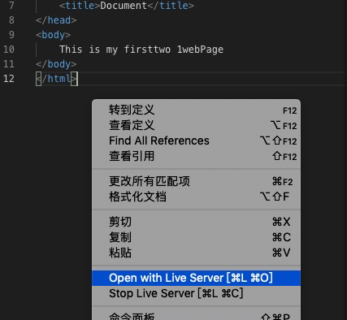
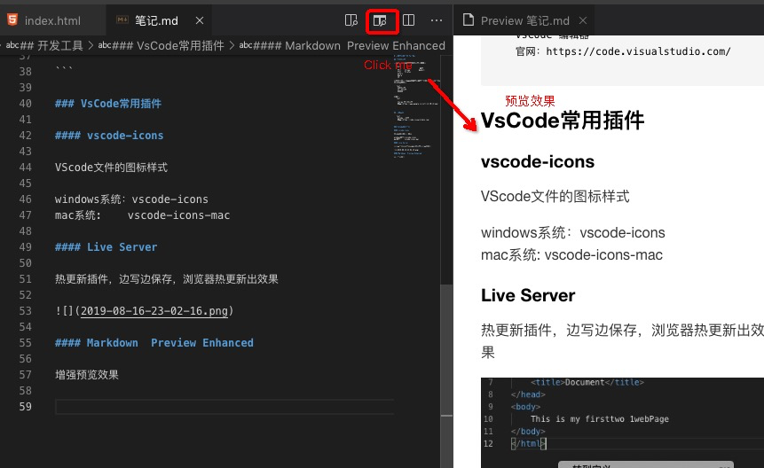
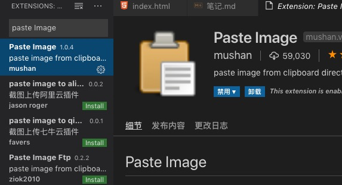

title: "1-3 开发环境的准备 For Mac"
catalog: true
date: 2019-08-17
subtitle: "HTML和CSS零基础权威入门"
header-img: "Demo.png"
tags:
真正具有自己独立内核的浏览器有哪些：
浏览器名称 内核
Chrome Webkit(和苹果公司合约问题)/ Blink
FireFox Gecko
Safari Webkit
Opera Presto(废弃) / Blink(目前)
IE Trident
其它浏览器： 无自己的内核，内核是用的别人的，只是把外壳（菜单，UI）换了下
360浏览器
搜狗浏览器
。。。
扩展知识：
浏览器的内核主要包括三个技术分支：排版渲染引擎，JavaScript引擎，以及其它
排版渲染引擎：负责取得网页的内容（HTML，XML，图像等），整理信息，以及计算机的显示方式，然后输出到显示器中，决定了浏览器如何显示内容以及页面的格式信息
JavaScript引擎：是用来渲染JavaScript的，渲染越快，页面的动态效果越快
推荐：
Chorme 谷歌浏览器
官网：https://www.google.cn/intl/zh-CN/chrome/
VsCode 编辑器
官网：https://code.visualstudio.com/
VScode文件的图标样式
windows系统：vscode-icons
mac系统: vscode-icons-mac
热更新插件，边写边保存，浏览器热更新出效果

增强预览效果

MarkDown基础语法
# 一级标题
## 二级
### 三级
#### 四级
...
```js
内容是js语法
```
```xml
内容是xml格式的
```
图片的增加：Mac下 要用Paste Image插件
Mac 电脑需要安装此插件，才能在Markdown里插入图片
快捷键：Command + Alt + V (先复制图片/或者截图)
